Самые дорогие коллекционные издания игр в истории
Как правило, у большинства игроков коллекционные издания любимых тайтлов вызывают большое любопытство, но совсем не желание потратить несколько лишних сотен долларов. Разработчики понимают это, и в первую очередь используют подобные релизы, как дополнительную рекламу. Чем интересней содержимое специальных изданий, тем больше внимания от игроков к оригинальному тайтлу. Некоторые студии решили как следует воспользоваться данным правилом.
Saints Row IV: Super Dangerous Wad Wad Edition (2013)
До сих пор не ясно, был ли это розыгрыш или нет, но в 2013 компания Deep Silver клялась, что не пытается обмануть игроков, предлагая им приобрести коллекционное издание Saints Row IV за один миллион долларов. Кто-то считает, что таким образом разработчики посмеялись над тенденцией индустрии выпускать дорогостоящие издания игр. Другие говорят, что цена была специально завышена, чтобы не нашлось покупателей, ведь содержимое Super Dangerous Wad Wad Edition оценили всего в $600000.
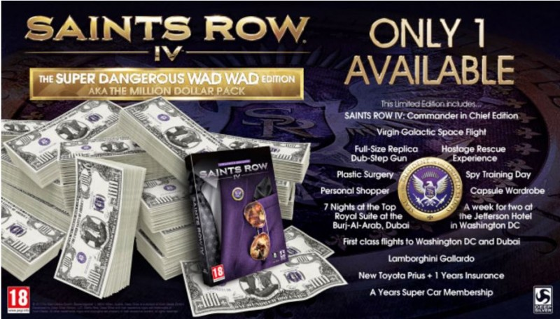В любом случае, покупателю было гарантировано следующее:
Saints Row IV: Commander in Chief Edition;- Полноразмерная реплика оружия Dubstep Gun;
- Тренировочный курс по шпионажу;
- Полет в космос от компании Virgin Galactic;
- Годовое членство в E25 Super Car Club и Lamborghini Gallardo;
- Пластическая операция на выбор;
- Шопинг с вашим персональным консультантом;
- Неделя проживания в гостинице The Jefferson Hotel в Вашингтоне;
- Участие в инсценированном освобождении заложников;
- Новая Toyota Prius;
- Неделя проживания в лучшем номере отеля Burj-al-arab и оплата перелета первым классом.
Resident Evil 6: Premium Edition (2012)
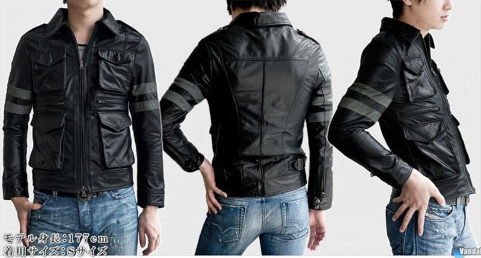The Beatles: Rock Band Limited Edition Premium Bundle (2009)
Третья игра в серии Rock Band оказалась полностью посвящена The Beatles, и ее выход был приурочен к изданию ремастер-версий альбомов группы в 2009. На этот раз инструменты, которые шли с ограниченной версией игры, имитировали те, что использовали участники легендарной группы на пике их славы. Бас-гитара Пола Маккартни Höfner 500/1 и барабанная установка Ринго Стара Ludwig-Musser привлекали внимание игроков больше, чем стандартные инструменты Rock Band.
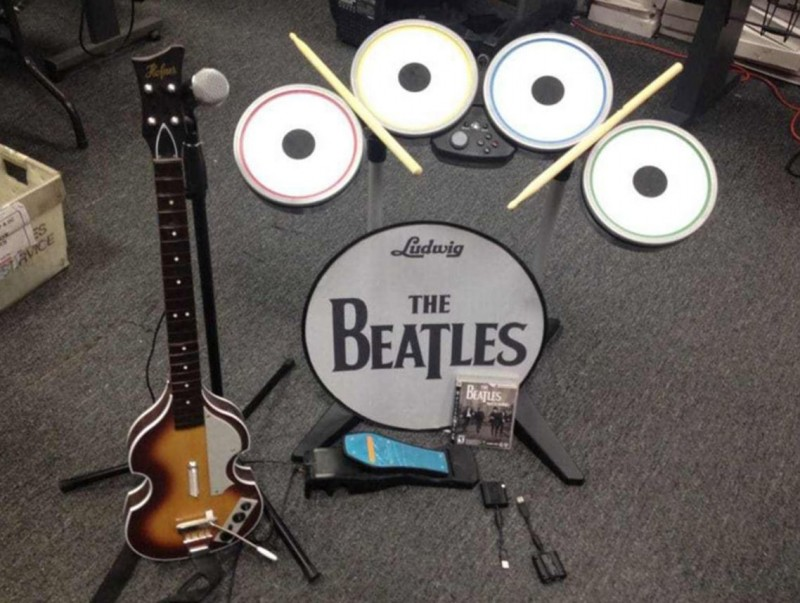Конечно, название группы стало решающим фактором при продаже тайтла наряду с довольно большой библиотекой песен The Beatles. В дальнейшем студия Harmonix Music System еще раз воспользуется этой формулой, выпустив Green Day: Rock Band в 2010.
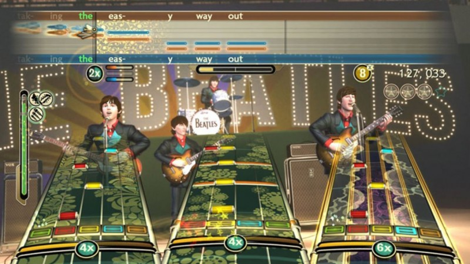Grid 2: Mono Edition (2013)
Никто не удивится, если придя в магазин за игровой консолью, он получит в подарок несколько хитовых тайтлов. Другое дело, когда вы покупаете игру, а вместе с ней получаете PlayStation 3… и гоночную машину. Британские разработчики Codemasters представили особенное издание гоночного симулятора Grid 2, которое включало гоночные шлем и костюм, PS3, и настоящий одноместный спорткар BAC Mono от компании Briggs Automotive Company.
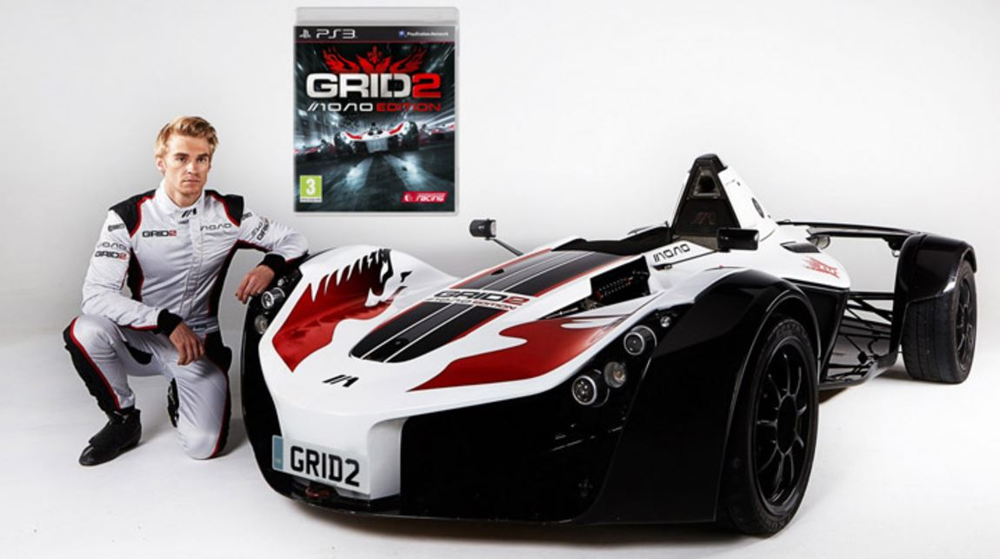BAC Mono разгоняется до 100 кмч за 2.8 секунды, а в целом способен добраться до отметки в 274 кмч. Само собой, стоило все это дело немалые $180000, и было представлено в единственном экземпляре. Обладателем стал ярый любитель видеоигр и спортивных автомобилей, музыкант Deadmau5.
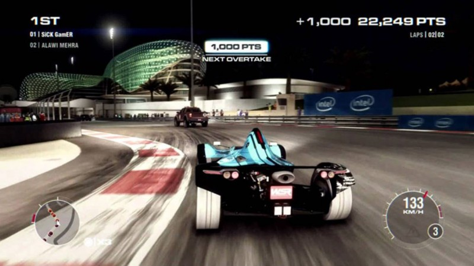Dying Light: My Apocalypse Edition (2015)
Для тех игроков, которые ловят себя на мысли, что после бесчисленного количества часов, проведенных за Dying Light, они могут с легкостью пережить заселение Земли мертвецами, разработчики из Techland выпустили My Apocalypse Edition. Данное издание содержит все необходимое для подготовки к зомби-апокалипсису. За безумные $386 000 помимо приятных призов, вроде наушников Razer Tiamat и четырех копий игры, вы получаете настоящее убежище от зомби, построенное компанией Tiger Log Cabins. Чтобы успешно маневрировать по улицам постапокалиптического города в поисках припасов, вас отправят проходить специальный курс по паркуру, а чтобы не потеряться ночью в вашем рюкзаке появятся фирменные очки ночного виденья. Помимо этого вас ждет фигура «Неуловимого» в человеческий рост, партия подгузников для взрослых, и экскурсия по офису Techland.
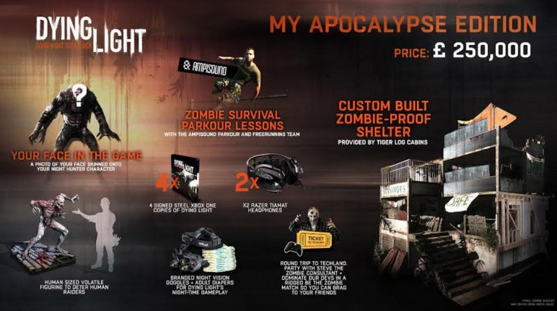Uncharted 2: Among Thieves — Fortune Hunter Edition (2009)
Уникальность данного издания не в ценных призах, а в том, что было выпущено всего 200 копий Fortune Hunter Edition. Более того, получить издание могли только те счастливчики, которые играли в демо-версию Uncharted 2: Among Thieves в определенное время.
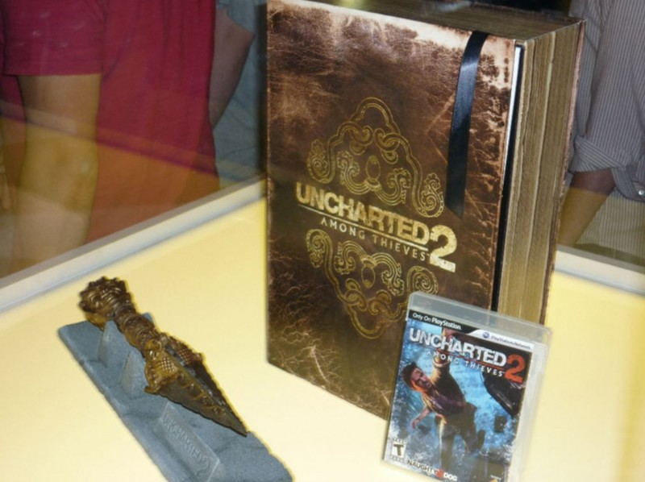Помимо самой игры обладатели Fortune Hunter Edition могут похвастаться не только огромным артбуком, но и репликой кинжала Пхурбу. Лимитированность Fortune Hunter Edition сделала свое дело, и теперь можно не рассчитывать получить редкое издание одной из лучших игр индустрии меньше, чем за $6800.
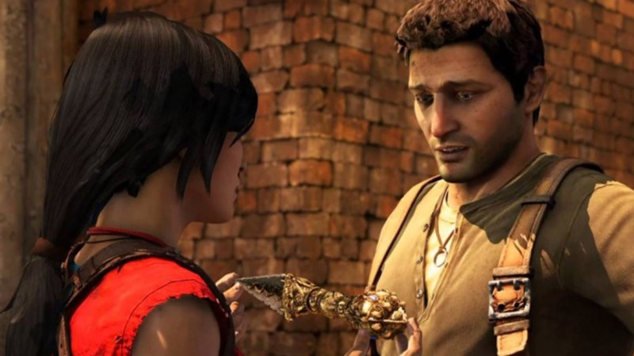Tekken 6: Wireless Arcade Stick Bundle (2009)
Левая рука держит стик, правая — бьет по кнопкам. Эта система, хоть и кажется неудобной, создает неповторимую атмосферу, особенно когда дело касается файтингов. Namco выпустила специальное издание своего самого известного файтинга Tekken для тех, кто скучает по времени, проведенному за аркадными автоматами.
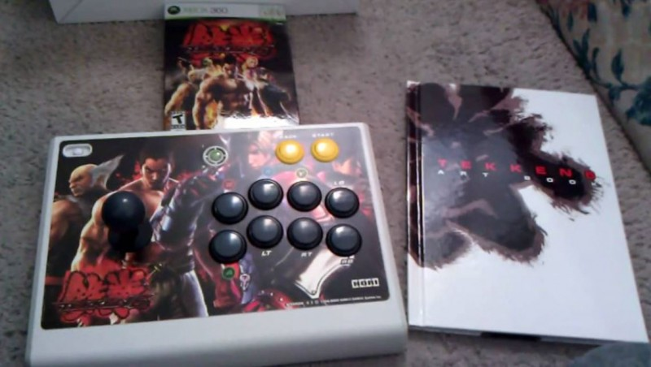Специально для Tekken 6 японская компания Hori разработала беспроводной контроллер, имитирующий управление аркадных автоматов. Здесь мы видим пример практичного коллекционного издания, купив которое вы получаете не только сувенир, но и новый опыт. Также версиями с аркадными контроллерами могут похвастаться и другие игры, такие как Tekken Hybrid для PS3, Mortal Kombat Tournament Edition, и BlazBlue: Calamity Trigger для Xbox360, для которой разработкой аксессуара также занималась компания Hori.
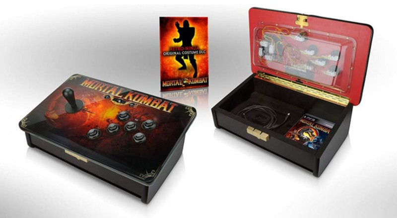Elemental Gearbolt Assassin Case (1998)
Кажется, это был первый случай, когда специальное издание игры в итоге стало известней оригинального тайтла. Elemental Gearbolt вышла в 1997 на первой PlayStation и представляла собой шутер, в который необходимо играть со световым пистолетом. Специальные чемоданы под названием Assassin Case, в которых можно было найти по золотому лайт-гану от GunCon, раздавались в качестве призов победителям конкурса от Working Designes, которые занимались локализацией игры в Северной Америке. С тех пор об Assassin Case практически ничего не известно. Всего существует 50 копий издания, которое теперь мечтает заполучить каждый коллекционер мира видеоигр.
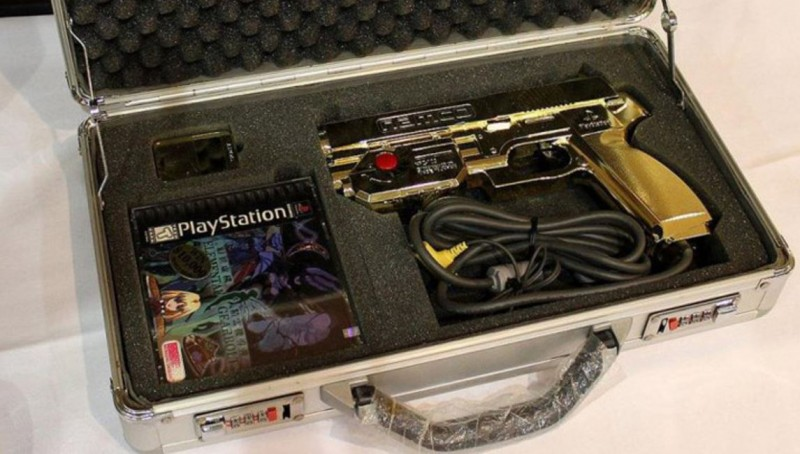Steel Battalion (2002)
Сложно назвать Steel Battalion для Xbox коллекционным изданием, учитывая, что в другом виде игра и не выпускалась. Тайтл представляет собой меха-симулятор, в котором игрок управляет огромным шагоходом, используя дополнительный набор контроллеров за $200, состоящий из нескольких педалей и джойстиков.
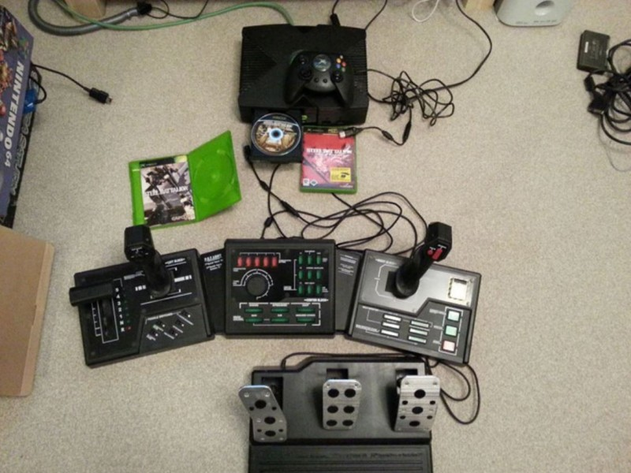Учитывая сложность управления, включающую несколько десятков кнопок, Steel Battalion быстро превращался из развлечения в настоящий спецкурс по вождению гигантского танка. С одной стороны, тайтл выглядел сомнительной затеей для большинства игроков, но с другой, стал своеобразным воплощением мечты хардкорных фанатов мехи… или, по крайней мере, первым шагом в эту сторону.
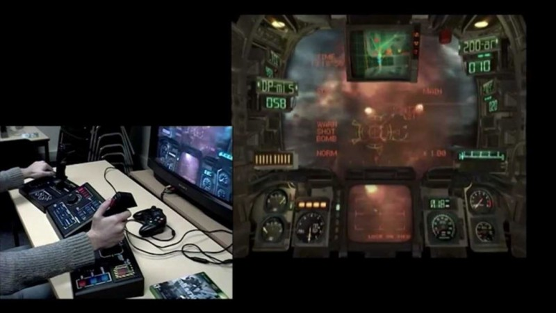Resident Evil Revelations: Premium Edition (2013)
Еще одно роскошное специальное издание от Capcom, на этот раз для Resident Evil Revelations, приуроченное к выходу игры на консолях седьмого поколения. Самый дорогой из трех вариантов Premium Edition помимо самой игры и саундтрека включает наручные часы с символикой B.S.A.A. («Альянс Противодействия Биотерроризму» из вселенной Resident Evil) от компании US Agency, ответственной за поставку часов правоохранительным органам США, и значок агента B.S.A.A. в чехле из настоящей кожи. Интересно, что если покупатель заказывал издание без часов, цена Premium Edition снижалась с $467 до $80.
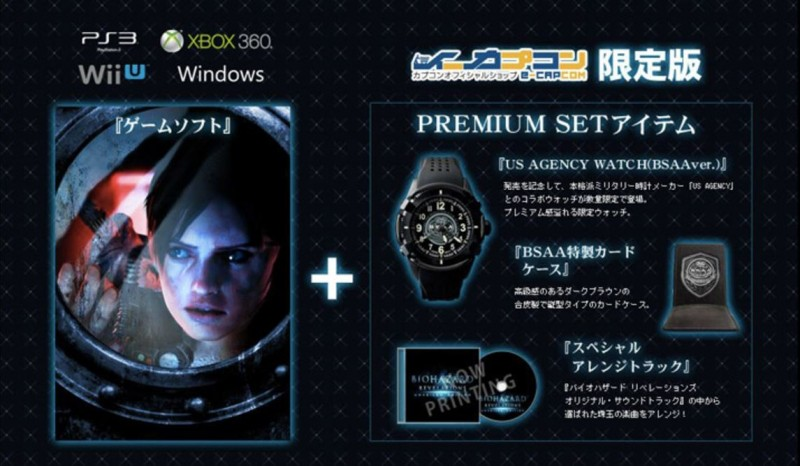Fallout 3: Exclusive Survival Edition (2008)
По идее, у Bethesda не должна была вызвать проблему сборка одного из самых запоминающихся коллекционных изданий видеоигр, учитывая неповторимую эстетику серии Fallout. Однако фанаты были немного разочарованы Exclusive Survival Edition. Издание, конечно, порадовало приятными сувенирами, отсылающими к миру серии, такими как фигурка Vault Boy или стилизованный ланч-бокс, но публике хотелось чего-то большего. Может быть, проблема была в осознании того факта, что в реальной жизни Pip-Boy 3000 представляет собой лишь неудобные наручные часы.
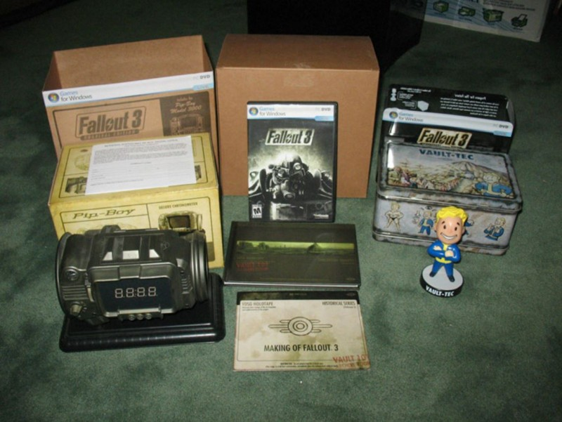Titanfall 2: Vanguard Collector’s Edition (2016)
Многие косплееры были разочарованы, узнав, что шлем Мастера Чифа, прилагающийся к Halo 3: Legendary Edition, можно разве что поставить на полку. Однако, купив Vanguard Collector’s Edition, они были приятно удивлены, ведь шлем пилота титана Vanguard не просто представляет собой шедевр игровой сувенирной продукции, но и легко надевается на голову. Более того, к шлему прилагается шарф и флэш-накопитель на 8 ГБ, не говоря уже о других приятных мелочах.
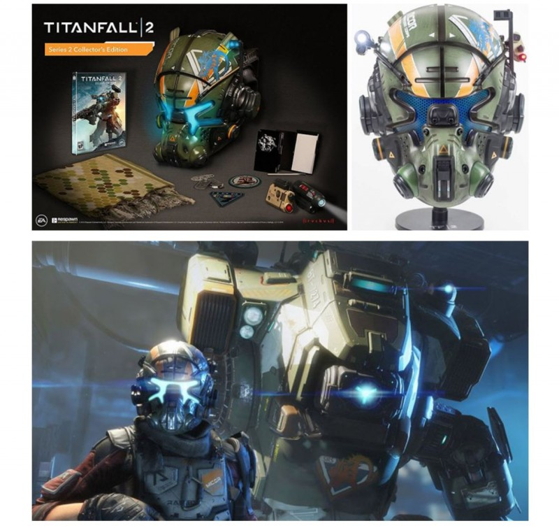Как и в случае с раритетными картриджами, коллекционеры засматриваются на специальные издания видеоигр лишь спустя годы. Сейчас чтобы утолить свое любопытство, игрокам будет достаточно посмотреть распаковку на Youtube. Но, так или иначе, «правильная» коллекционка создает дополнительный ажиотаж вокруг игры, а большего от нее и не требуется.